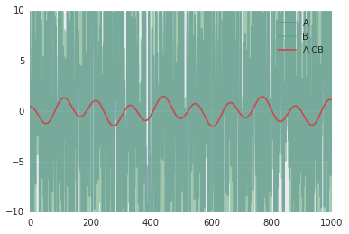
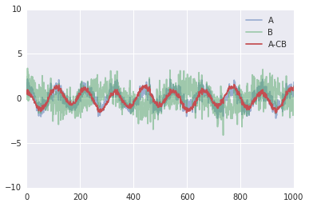
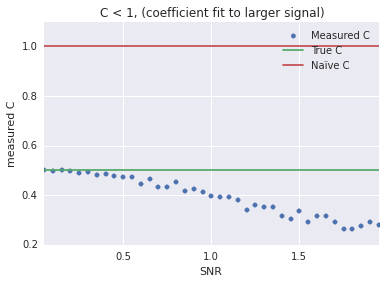
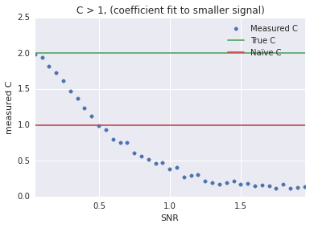

- Fri 25 December 2015
- Science
- Kyler Brown
- #signal processing, #python, #science
(an IPython notebook with the same content can be found here: https://gist.github.com/kylerbrown/a612923f1cd071c9bedd )
Assume you have two channels, At and Bt where t ∈ 0, 1, 2, ...T. Each channel is composed of a linear sum of a unique signal and a common noise, with the noise scaled by an unknown constant.
If C was known, we could remove the noise from the difference of the two channels optimally, that is:
In paired, chonically implanted electrodes, common noise and movement artifacts can be reduced (but in practice not eliminated) using this method.
Solving for C analytically
We'd like to minimize the sum squared difference between An and CBN.
Taking the derivative with respect to C and setting the derivative to zero, we find
In Python, this would look something like:
# setting up the problem from __future__ import division import numpy as np T = 1000 t = np.arange(T) common_noise = 10*np.random.randn(T) true_C = .5 signal_1 = np.cos(2*np.pi*t/110) signal_2 = np.cos(2*np.pi*t/300) A = signal_1 + common_noise B = signal_2 + common_noise / true_C # solving for C C = np.dot(A, B) / np.dot(B, B) print("True C: {}, computed C {}".format(true_C, C))
True C: 0.5, computed C 0.499955696052
import matplotlib.pyplot as plt import seaborn as sns %matplotlib inline plt.plot(A, alpha=.5, label="A") plt.plot(B, alpha=.5, label="B") plt.plot(A-C*B, label="A-CB") plt.legend() plt.ylim(-10,10);
Interestingly, this method works less well with a lower noise channels, for example:
common_noise = 0.5*np.random.randn(T) A = signal_1 + common_noise B = signal_2 + common_noise / true_C C = np.dot(A, B) / np.dot(B, B) print("True C: {}, computed C {}".format(true_C, C))
True C: 0.5, computed C 0.350776916893
plt.plot(A, alpha=.5, label="A") plt.plot(B, alpha=.5, label="B") plt.plot(A-C*B, label="A-CB") plt.legend() plt.ylim(-10,10);
Solving for C using optimization
We can use optimization packages, such as scipy's optimize module to check our analytical solution.
from scipy.optimize import minimize def SSD (c, a, b): """returns the sum squared of a - c*b""" return np.sum( (a-c*b)**2 ) res = minimize(SSD, 1, args=(A, B)) C = res.x[0] print("True C: {}, computed C: {}".format(true_C, C))
True C: 0.5, computed C: 0.350776907985
Which is the same solution found analytically.
Quality of common mode rejection over signal-to-noise ratios
def find_c(snr, T, true_C): signal_1 = np.random.randn(T) signal_2 = np.random.randn(T) common_noise = 1/snr*np.random.randn(T) A = signal_1 + common_noise B = signal_2 + common_noise / true_C return np.dot(A, B) / np.dot(B, B)
true_C = 0.5 snr = np.arange(0.05, 2, 0.05) C = [find_c(x, 1000, true_C) for x in snr] plt.scatter(snr, C, label="Measured C", color=sns.color_palette()[0]) plt.xlabel("SNR") plt.ylabel("measured C") plt.hlines(true_C, snr[0], snr[-1], label="True C", color=sns.color_palette()[1]) plt.hlines(1, snr[0], snr[-1], label=u"Naïve C", color=sns.color_palette()[2]) plt.legend() plt.xlim(snr[0], snr[-1]) plt.title("C < 1, (coefficient fit to larger signal)");
true_C = 2 snr = np.arange(0.05, 2, 0.05) C = [find_c(x, 1000, true_C) for x in snr] plt.scatter(snr, C, label="Measured C", color=sns.color_palette()[0]) plt.xlabel("SNR") plt.ylabel("measured C") plt.hlines(true_C, snr[0], snr[-1], label="True C", color=sns.color_palette()[1]) plt.hlines(1, snr[0], snr[-1], label=u"Naïve C", color=sns.color_palette()[2]) plt.legend() plt.xlim(snr[0], snr[-1]) plt.title("C > 1, (coefficient fit to smaller signal)");
Conclusion
Optimizing C works best when the SNR is low, so a segment of recording without much signal is ideal. When fitting C, choose the noiser of the two channels.